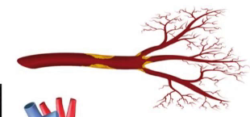
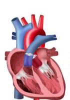
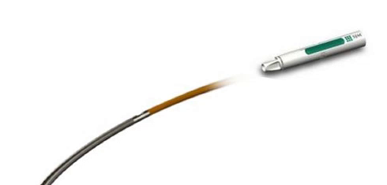
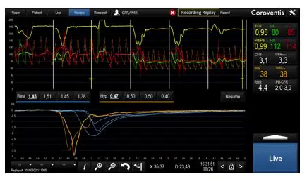
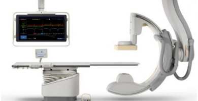
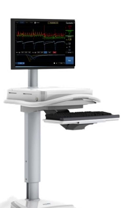
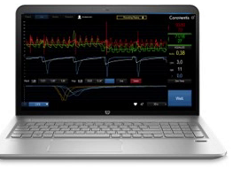
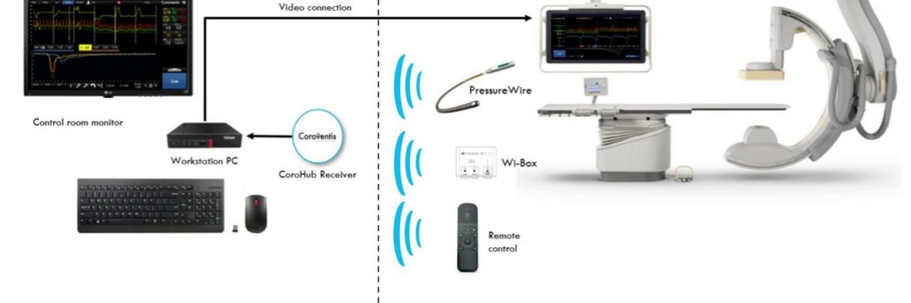
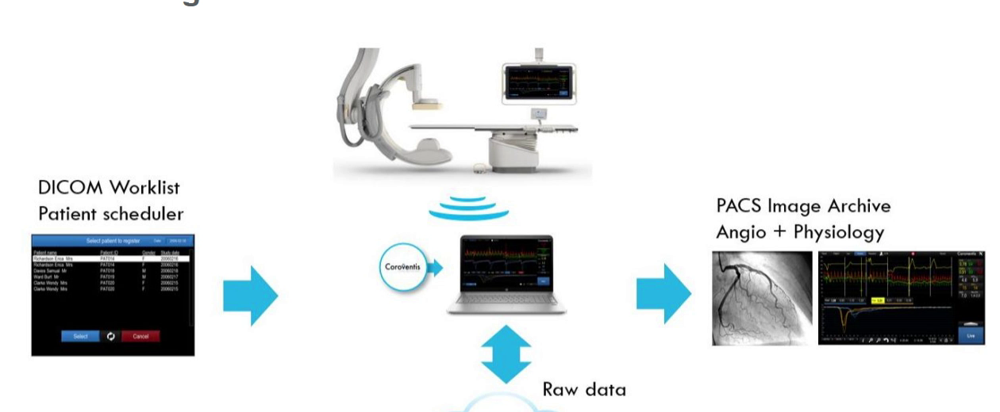
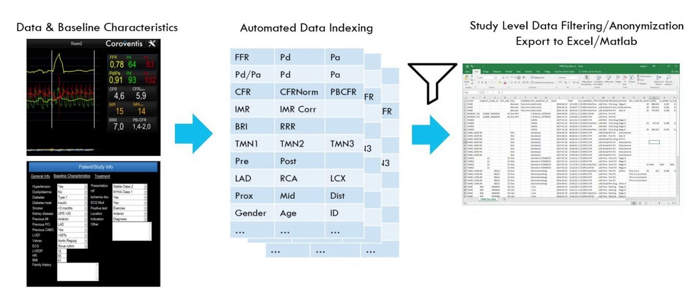

SYSTEM / COROFLOW
COROFLOW
CoroFlow Cardiovascular System is an advanced platform for assessment of both epicardial and microvascular physiology. Designed to communicate with Abbott's wireless PressureWire® X, CoroFlow is easy to use for daily clinical practice at the same time as it provides powerful tools for advanced physiology.
01 / PHYSIOLOGY
ONE SYSTEM,
THE FULL PICTURE
Epicardial and microvascular assessment side by side, plus ventricle function — so one pullback doesn't have to stand in for the whole picture.
Epicardial assessment
- FFR, RFR, Pd/Pa
- Pullback
- Serial lesions*

Microvascular assessment
- IMR, RRR
- CFR, PB-CFR
- Absolute Flow/Resistance

Ventricle function
- Contractility, dP/dt
- Diastolic function, EDP, Tau
- Valve physiology*
* In development
02 / CAPABILITIES
COMPLETE CARDIAC
CHARACTERIZATION

03 / HARDWARE
BUILT FOR
PRESSUREWIRE® X
CoroFlow communicates directly with Abbott's wireless PressureWire X, with live waveform review, recording replay and CFR/IMR calculation on one screen — in the room, or from the control room.

04 / DEPLOYMENT
INSTALLATION
FLEXIBILITY

Lab integration
Optimal workflow & PW utilization.
No cables. Installation with no lab downtime.

Mobility
Multi-room, touch screen.
Rechargeable — no cables.

Research flexibility
Laptop / Surface / Workstations.
CoroFlow lab integration

The workstation and CoroHub receiver stay in the control room; the display, PressureWire, Wi-Box and remote control stay in the cathlab — connected wirelessly across the room boundary, with a live video feed back to the control room monitor.
05 / DATA
DATA
MANAGEMENT
From the DICOM worklist to an anonymized export — CoroFlow handles the study data pipeline end to end.

